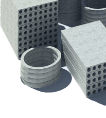

<% for(let i = 0; i < 4; i++) { %>
<% } %>
200<%= 6 + i %> г.
Общество с ограниченной ответственностью «Блок» ведет свою деятельность со второй половины 2006 года и создавалась как оптовая торгующая компания железобетонными изделиями (ЖБИ). Изначально основным рынком сбыта являлся Северо-Западный Федеральный округ, а именно город Санкт-Петербург и Ленинградская область, основными товарными направлениями были:
Наружные инженерные сети:
элементы колодцев (кольца железобетонные), каналы непроходные (КН), железобетонные лотки и крышки к ним (плиты перекрытия лотка), тепловые камеры.
Жилое строительство
(вентиляционные блоки, шахты лифтовые, перемычки, лестничные марши).
Нетиповая продукция по чертежам
Управленческая команда ГК БЛОК использует все необходимые ресурсы для полного
исполнения обязательств по договорам с Заказчиками.
Главный ориентир компании – это соотношение «надежность – сроки».
Главный ориентир компании – это соотношение «надежность – сроки».
БЛОК ЖБИ Россия
Более чем за 15 лет ГК БЛОК прошла путь от небольшой фирмы, торгующей ЖБИ в Санкт-Петербурге, до крупного холдинга федерального масштаба. В структуру холдинга входят:
<% for(let i = 0; i < 5; i++) { %>
заводы по производству ЖБИ в Санкт-Петербурге
и Краснодарском крае;

нас выбирают
Больше 10 000 клиентов за эти годы выбрали
Группу компаний «БЛОК» в качестве надежного
партнера и поставщика для своего бизнеса.
Группу компаний «БЛОК» в качестве надежного
партнера и поставщика для своего бизнеса.
За указанное время ГК БЛОК всегда исполняла свои обязательства, находила компромиссные решения в самых непростых ситуациях, никогда не выступала проигравшим ответчиком в судах.
В работе мы всегда руководствуемся правилами деловой этики и выполняем свои обязанности независимо от их правового характера.
Будем рады, если знакомство с нашим сайтом и компанией приведет к взаимовыгодному сотрудничеству по профильным направлениям деятельности. В разделе «Контакты» Вы найдете всю контактную информацию.
В работе мы всегда руководствуемся правилами деловой этики и выполняем свои обязанности независимо от их правового характера.
Будем рады, если знакомство с нашим сайтом и компанией приведет к взаимовыгодному сотрудничеству по профильным направлениям деятельности. В разделе «Контакты» Вы найдете всю контактную информацию.
С уважением, команда ГК «Блок»